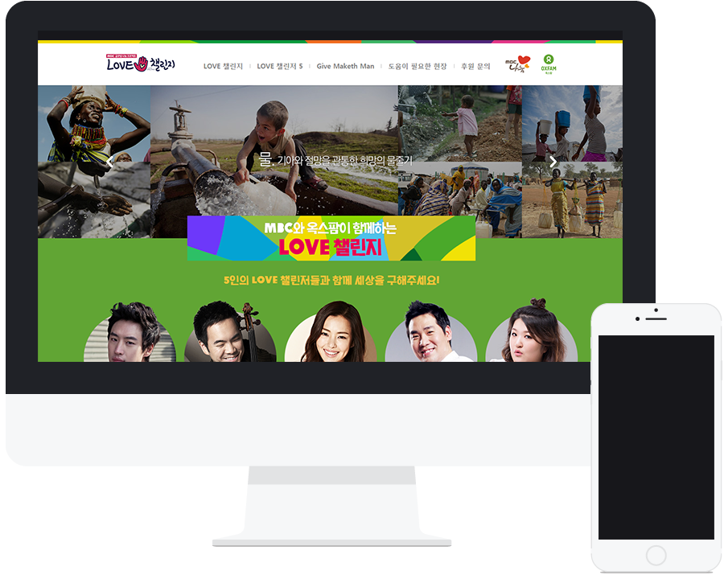
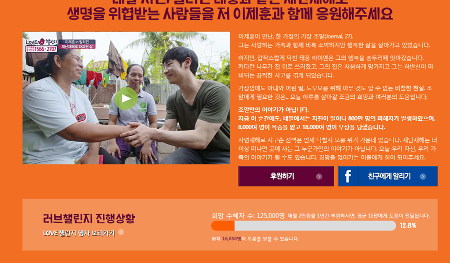

웹디자인
MBC와 OXFAM에서 협력하여 제작하는 후원 사이트. 5명의 LOVE 챌린저들을 통해 다섯가지의 영역에 후원하는 시스템입니다.
MBC와 OXFAM에서 협력하여 제작하는 후원 사이트. 5명의 LOVE 챌린저들을 통해 다섯가지의 영역에 후원하는 시스템입니다.
다섯명의 스타와 그들이 각자 맡고 있는 5가지의 후원 영역을 옥스팜 가이드 컬러와 매치하여 디자인 하였습니다.
후원 수혜자를 가시적인 그래프 및 수치로 제시하여 후원금의 이용을 보여줍니다.
